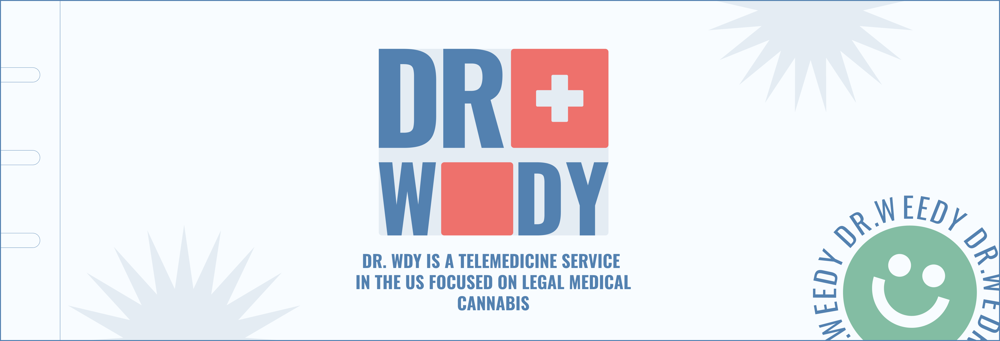
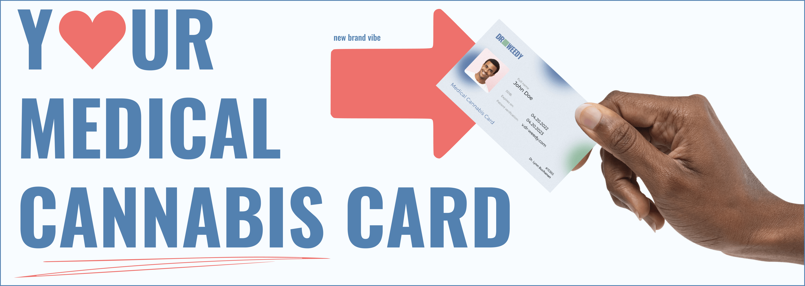
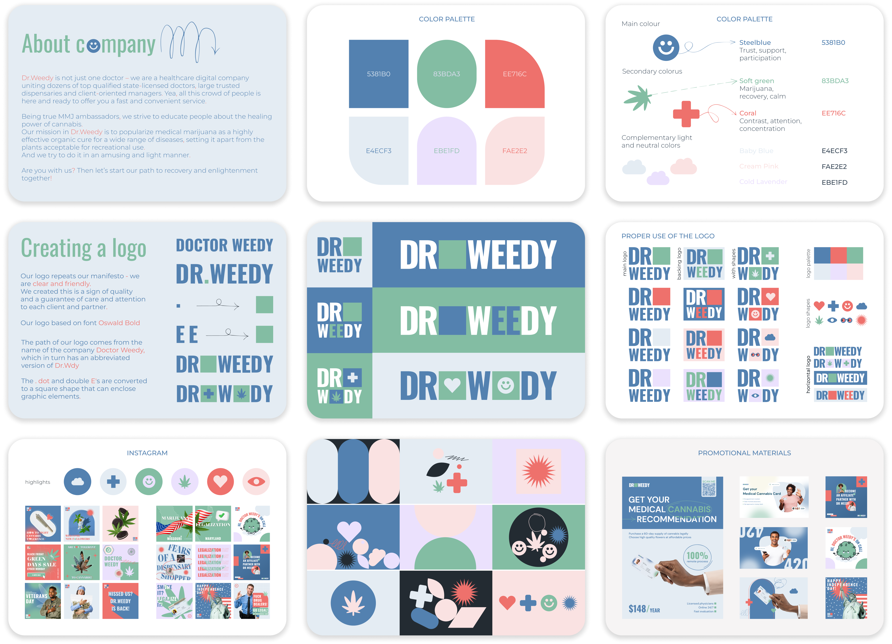
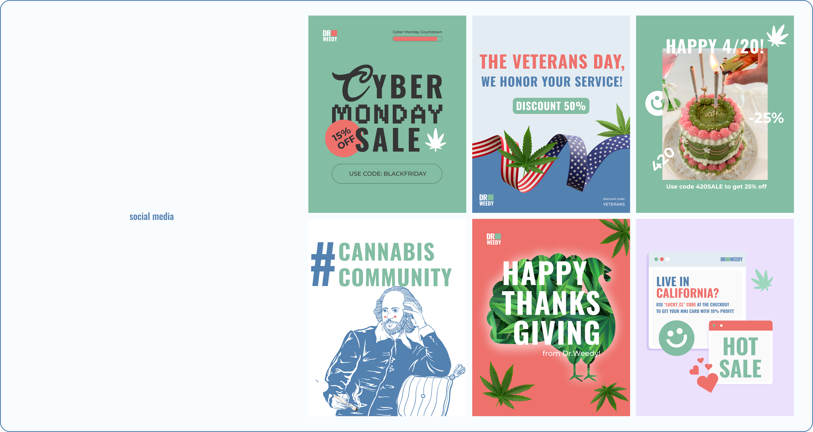
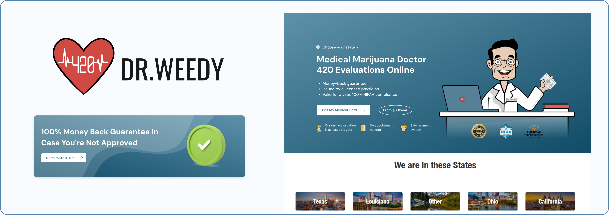
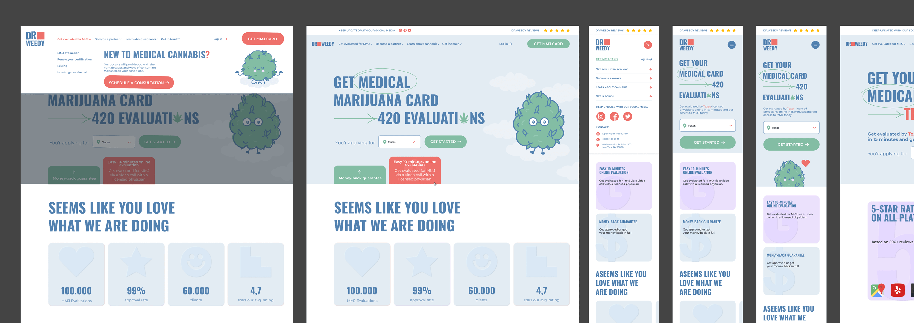

USA\\DOCTOR WDY
BRAND IDENTITY&SITE


Brandbook parts:


WEBSITE


SOCIAL MEDIA

PROJECT CONTEXT
Dr WDY is a U.S.-based telemedicine service working in a sensitive and legally complex category: medical cannabis. The product is built as a subscription that gives people access to licensed doctors.
When I stepped in in Spring 2022, the brand was basically in its early, unfinished stage. The product existed, but the brand did not.
This project was initiated by me with a clear decision to build the brand from scratch and turn it into a system that could actually live across channels.
When I stepped in in Spring 2022, the brand was basically in its early, unfinished stage. The product existed, but the brand did not.
This project was initiated by me with a clear decision to build the brand from scratch and turn it into a system that could actually live across channels.
VISUAL CONCEPT
At the beginning, the brand voice and visual language had not yet been shaped into a consistent system, so communication did not always reflect the calm and supportive experience we wanted users to feel.
We consciously avoided traditional clinical aesthetics. In this category, medical visuals can easily feel cold, scary, and distancing. Instead, we used a 90s-inspired sporty and healthy direction: relaxed, friendly, and grounded in real life.
We consciously avoided traditional clinical aesthetics. In this category, medical visuals can easily feel cold, scary, and distancing. Instead, we used a 90s-inspired sporty and healthy direction: relaxed, friendly, and grounded in real life.

A SYSTEM, NOT ISOLATED ASSETS
One of the key priorities of the project was system building. Identity, website, social media, and marketing materials were designed as one ecosystem rather than disconnected elements.
Within the project, we developed visual and communication principles, documented tone of voice, reworked website structure and visual design, styled Instagram as part of the system, prepared templates, and created ad and email materials.
Within the project, we developed visual and communication principles, documented tone of voice, reworked website structure and visual design, styled Instagram as part of the system, prepared templates, and created ad and email materials.
PROCESS
The project took about three months and included an audit of the current state, competitive review, concept development, iterative testing of visual directions, and system building across touchpoints.
The process was non-linear and required constant alignment with category sensitivity and market constraints.
The process was non-linear and required constant alignment with category sensitivity and market constraints.
SOCIAL MEDIA CONTENT
TAKEAWAYS
This project became an important experience in working under high uncertainty, without access to data, and in a sensitive medical category where trust-building and anxiety reduction were central.
It reinforced a key principle: design and identity create real value only when embedded into communication and processes, not when they exist as a standalone visual layer.
This case study is published with the client consent and reflects the brand state and decisions at the time the project was completed.
It reinforced a key principle: design and identity create real value only when embedded into communication and processes, not when they exist as a standalone visual layer.
This case study is published with the client consent and reflects the brand state and decisions at the time the project was completed.